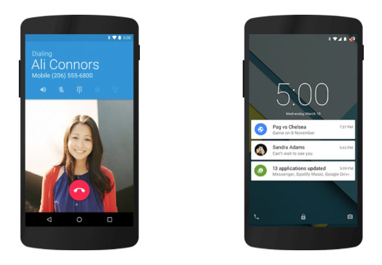

Android 5.0 Lollipop

El diseño de Google Now se expande, documenta y aplica a todo Android: llega Material Design, un soplo de aire fresco que ya se iba haciendo necesario tras seis años improvisando sin unas reglas claras. Material Design llegaba en varias aplicaciones de Google, pero ahora la pelota estaba en el tejado de los desarrolladores para que adaptaran sus aplicaciones a este nuevo diseño.

El nuevo look llegaba también a la pantalla de bloqueo, donde ahora se podían mostrar las notificaciones a cambio de perder por el camino los widgets. Otro cambio de parecer de Google es con respecto al acceso al almacenamiento externo (como tarjetas microSD), que vuelve a ser posible.
El experimento de ART y su compilación de aplicaciones AOT es un éxito y reemplaza oficialmente al viejo Dalvik. Las mejoras de rendimiento y batería tienen nombre propio: Proyecto Volta. Se trata de una serie de cambios como el modo de ahorro de energía y programación de tareas para que se ejecuten solo con WiFi para ahorrar batería al reducir el uso de los datos móviles.
La vista de aplicaciones Recientes muestra ahora también tareas y es posible fijar aplicaciones para que no puedas salir de ellas "fácilmente". Estas aplicaciones recientes además persisten después de reiniciar el teléfono.
Otras novedades interesantes son la búsqueda integrada en los ajustes de Android, cada vez más necesaria pues los ajustes no paran de crecer, o el ajuste rápido para activar la linterna del teléfono sin tener que instalar nada adicional.
Lollipop 5.1, en marzo de 2015, añade algunas novedades más. Llegan por primera vez la protección antirobo tras reinicio de fábrica (que debes iniciar sesión con la cuenta de Google) y el soporte oficial para varias tarjetas SIM.